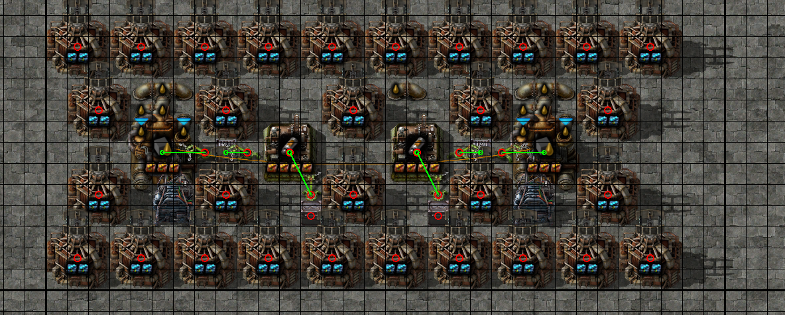
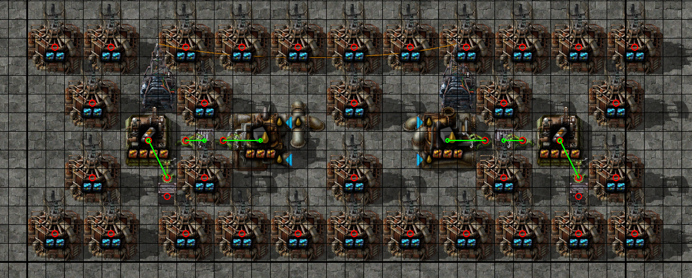
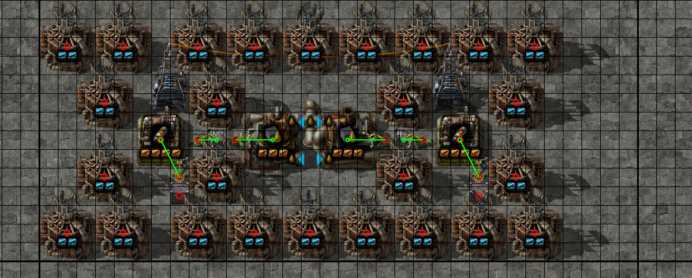
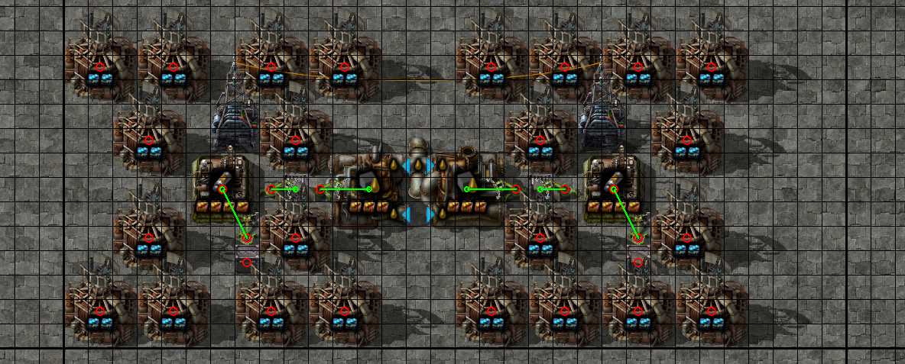
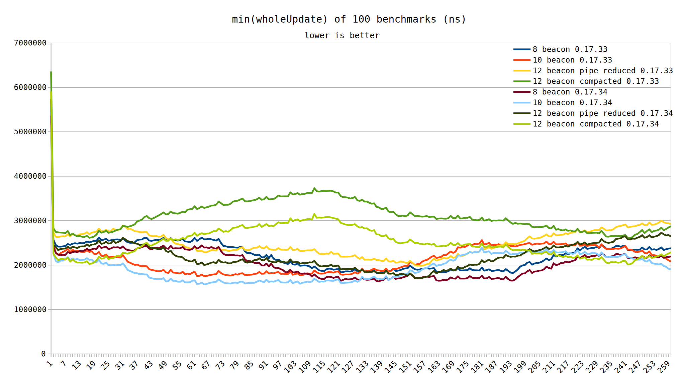
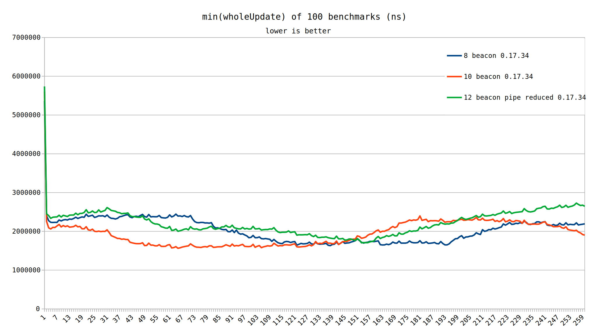
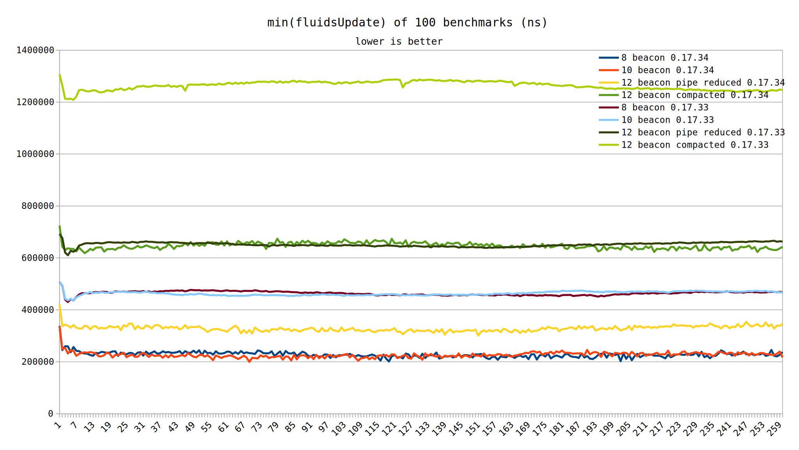
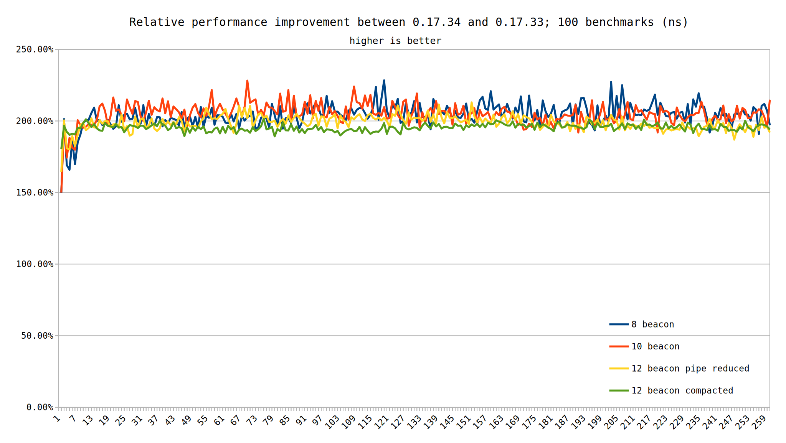
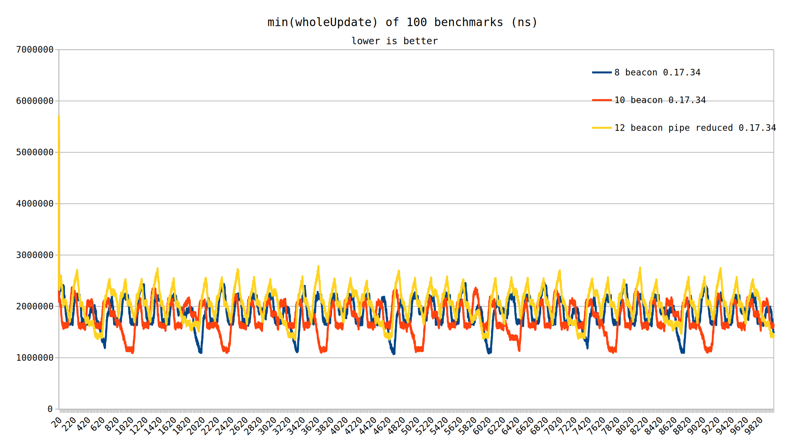
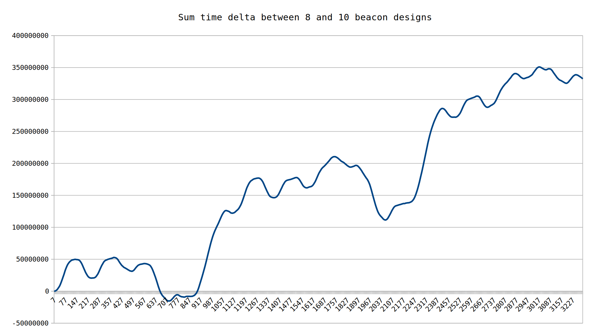

Even after optimizations, it is still best to use as few pipes as possible. In testing the same number of fluid groups but consisting of varying numbers of pipes, the threaded optimizations provided a ~2X speedup for all cases measured.
The 0.17.0 update brought with it significant changes to the performance characteristics of fluids. However, for non-Windows builds, the actual threading of the fluid groups was not included until 0.17.34. Other optimizations were still applied, such as the locality of memory, for non-Windows versions of the game (known via measured improvements in test-000017).
Also added for 0.17 was the fluids update timing which can be gathered using the --benchmark-verbose command line flag. At this time it is not known if this timing is cumulative or total. This diagram shows two possible measurement methods by which the timing could be generated. Each fluid group could measure its time taken (unaware it may be running on another CPU core). Alternatively, a marker before all fluids are updated is taken, and another when all have completed. This would measure the total time it took, factoring in all available cores.
This test presents a few designs which create rocket fuel from light oil and directly void it into infinity chests. Since the beacon coverage on the rocket fuel portion of the design is identical at 12 beacon between designs, voiding like this should be comparable between designs.
All designs contain groups of 36 rocket fuel assemblers, each group being fed by one fluid network, which itself is fed by a single infinity pipe. Each of these groups has been copied to 100 pastes. Layouts have been tiled to maximize beacon sharing and reduce pipe usage in each of the cells. Each of these designs will be benchmarked 100 times, for a duration of 260 ticks. The tick duration is not precisely chosen as it would be infeasible to align the maps due to their dissimilarity. The maps do not contain any long period dissimilarity (like trains) so a short duration should be reasonable (especially if there is a large performance delta).
The first design of consideration is that of 12 beacons on the chemical plants. This layout uses fewer beacons due to better sharing, but also uses more pipes.
The second of these designs also achieves 12 beacons on the chemical plant, but reduces the pipe count compared to the first as well. In total it has 359 beacons, compared to the 338 of the first design. It also has 108 pipes per group, compared to the first's 238.
The next design aims to minimize pipes at all cost, causing the chemplants to only achieve 10 beacon coverage. It contains a mere 68 pipes per group, while also using 282 beacons.
The fourth and final design takes the previous one and deliberately reduces beacon count on the chemplants to only 8 beacons. Given that the removed beacon hits 2 or 4 chemplants, it's not likely that the power cost savings will exceed the increased idle time on the chemplants, however, it is worthwhile to test.

Initially, it's not entirely clear which is the winner. However, it is pretty easy to spot that the 12 beacon compacted setup is the slowest. It is also the design which improves the most between 0.17.33 and 0.17.34, as could be expected because it contains the most pipes.
It's also clear that we most likely will need to benchmark for longer than 260 ticks. Here is that data again filtered to the relevant comparison data.

Given the high degree of similarity between the 8 and 10 beacon variants, it's unsurprising they're so close. Taking the aggregate sum of the min(wholeUpdate) per tick shows that the 10 beacon was ~5% better than the 8 beacon. But considering that the slowest tick (excluding the first tick) was 50% slower than the fastest tick, that result could be due to duration chosen. Ergo, we need to run longer benchmarks. This next set of data will be for 100 runs, 10,000 ticks. We will also limit ourselves to version 0.17.34 since the reason to run longer is to compare maps to one another, not one to itself. Comparing a map to itself is a perfectly aligned scenario, therefore, duration is unimportant.
However, before that 10k run, let's take a quick look at the fluids update timing.

It's clear that the fluids update timing is not measured per fluid group and summed, rather it is one overall measurement to time all fluid updates. The stack of results lines up quite expectedly based on the number of pipes in each design. Threading doesn't change the ordering, but it does shift the scale down. One thing that may be placebo is that the results from 0.17.34 seem to be noisier than those produced with 0.17.33. It would make somewhat logical sense that during the fluid update portion of the game update, all cores are in use by the game. If during this time we encounter some operating system interference, there are no idle cores to handle it.

Looking at the relative ratios of the fluidsUpdate timing, there is essentially a 2x speedup across the board. Given the varying number of pipes in each measured pipe group, this is quite an interesting result. The best case scenario would have resulted in fluids update being 4x faster due to measurements being conducted on a quad core CPU. It is not known if having additional CPU cores would cause further speedups, or if we have capped out on some other bottleneck (most likely cache or memory).
In a typical base pipe groups will vary in size throughout the map so it is not known applicable an expected 2X speedup would translate.
Going back to the 10k run, now we have clearly captured several full cycles of each design. Immediately, it stands out that the 12 beacon has fallen off in favor of the other two designs.

It's still kind of hard to make out which one, the 8 or 10 beacon design, is faster. The next graph makes it crystal clear. This graph takes the time the 8 beacon took, and subtracts the time the 10 beacon took. It then cumulatively adds it to the prior ticks. In the simplest terms, when the graph is rising, the 10 beacon is faster, and when it is falling, the 8 beacon variant wins.

We don't even need to see the full 10k ticks to know where this is headed. It's really clear that the 10 beacon design wins out versus the 8 beacon. It would appear that for this case, the power overhead associated with the extra beacons doesn't put us at a ups deficit compared to the benefit they provide.
The main takeaway from these tests is that although pipes were optimized significantly in 0.17 and later 0.17.34 (on Linux), it is best to minimize their use. Of the designs tested, the 10 beacon variant originally designed in 0.16 remains the best option known.
Also of note is a result showing that additional beacons with coverage on 2 or 4 chemical plants yielded better performance. It is not known specifically when the power overhead will result in reduced performance (specifically for the case were removing beacons doesn't incur additional machinery). There are several hypotheticals which will require further testing.